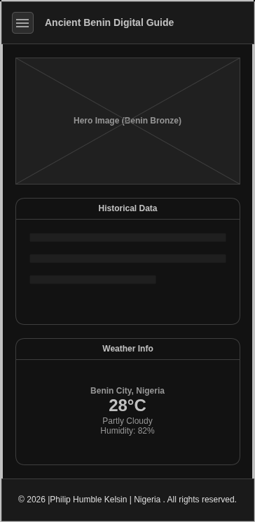
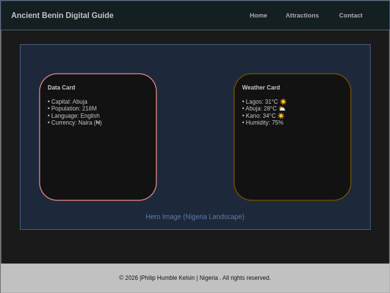

Site Name
Ancient Benin Digital Guide
I chose this name because it directly communicates the historical depth of the Kingdom of Benin while positioning it as a modern digital resource for tourists and researchers.
Site Purpose
The purpose of this site is to promote tourism and cultural education for Benin City, Nigeria. It will provide a central hub where visitors can learn about the Benin Bronzes, find historical landmarks, and inquire about local guided tours through a dynamic, responsive interface.
Scenarios
- Where can I find the most famous historical landmarks in Benin City, and are they currently open to the public?
- How can I contact a local guide for a cultural heritage tour of the Royal Palace area?
Color Schema
Typography
Heading Font: Cinzel (Serif) - Used for all major titles to reflect the ancient and royal history of the Kingdom.
Body Font: Raleway (Sans-serif) - Used for all paragraphs and data lists for high readability and a modern feel.
Wireframes
Below are the layout plans for the Home Page.
Mobile View

Desktop View
